Finish the sentence
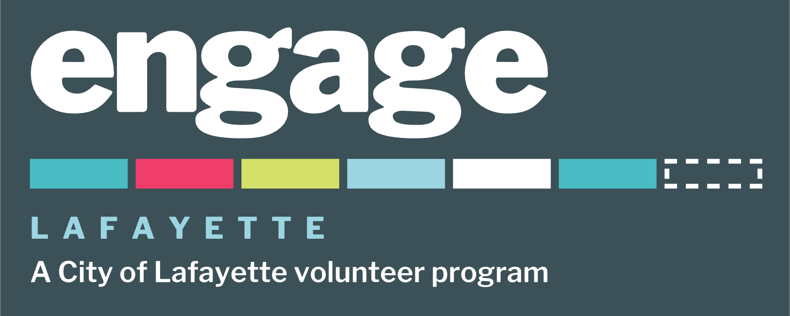
Engage Lafayette — the Patchwork Blank logoThe brief
Engage Lafayette is the City of Lafayette's volunteer platform. The program's communications plan set out to grow sign-ups, starting with people who had already volunteered, and it gave me the visual identity.
My role
I was the visual identity lead. I took the identity from concept to a complete system: the logo, the brand guide, print and digital pieces, and co-branding rules for City departments and partners.
The decisions
- An idea residents complete. "We can do more, ___" ends in a blank people fill in themselves: "together," "for our trails," "with my neighbors." Handwriting is used only to fill that blank. The brand invites people in instead of announcing at them.
- Part of the City, not a rival to it. The mark is six equal patches and one empty one, in colors from the City's own "Old Town" palette. The endorsement "A City of Lafayette volunteer program" travels with it.
- English and Spanish together. "Podemos hacer más, ___" carries the same idea on every bilingual piece, from the whiteboard to the pledge postcard.
- Built for other people to use. Co-branding rules for departments and partners, an event flyer template with placeholders, and a library of more than 160 single elements: patches, lines, type, colors and QR codes.
What I delivered
A logo system, a 13-page brand concept, a brand guide, seven stickers, three flyers (including a tear-off QR flyer and an event template), a pledge postcard, an event whiteboard, social, web and email pieces, and co-branding examples.
- Role
- Visual identity lead
- Organization
- City of Lafayette
- Worked with
- City of Lafayette staff
- Years
- 2026
- Delivered
- Logo, brand guide, print, digital and co-branding rules
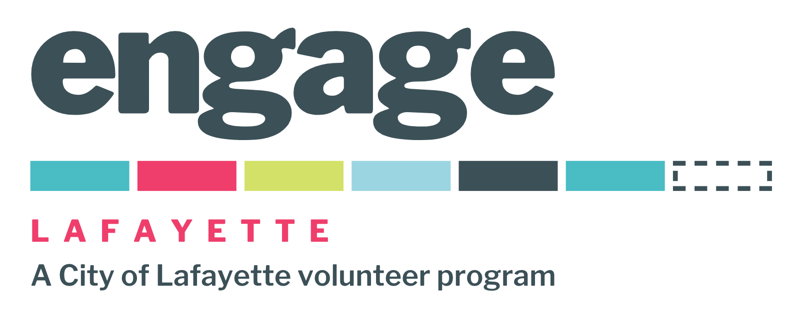
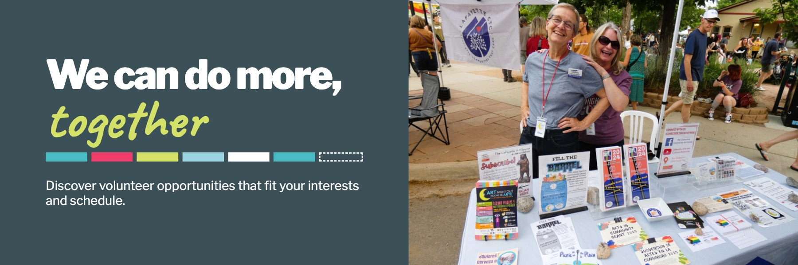
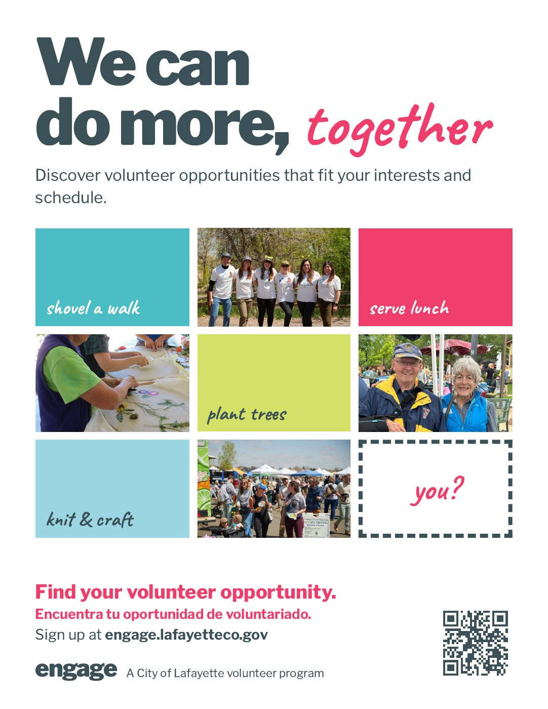
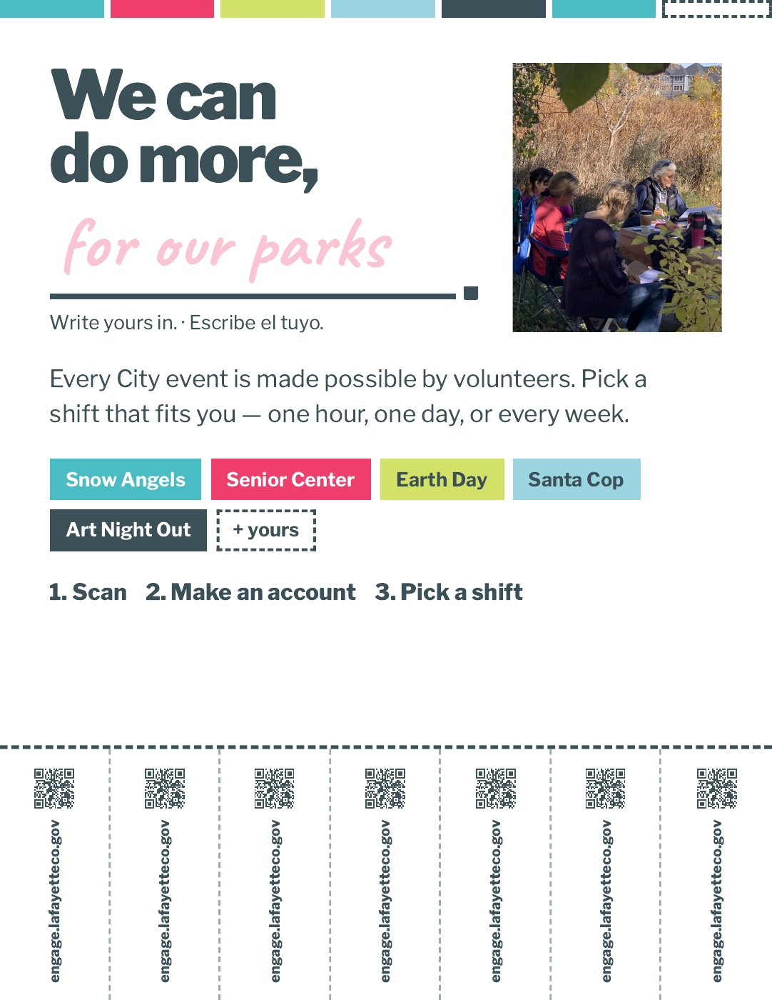
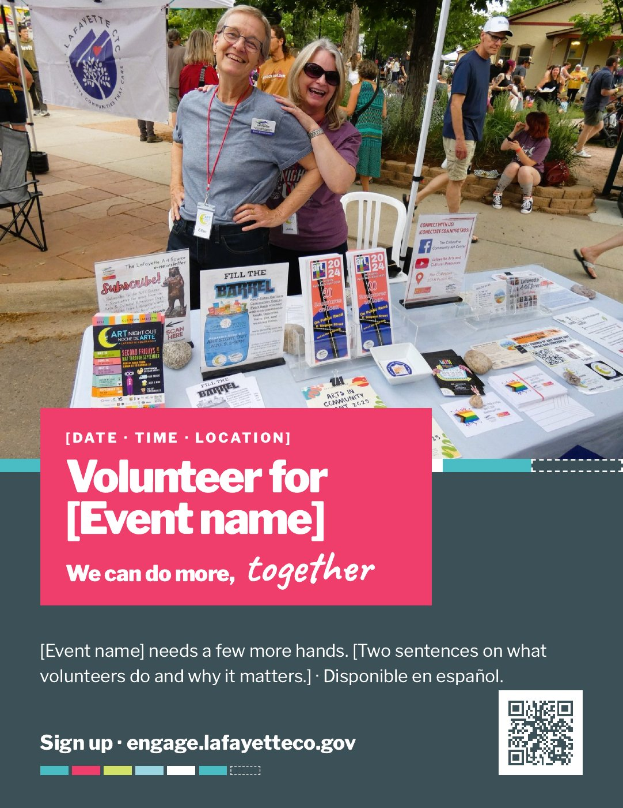
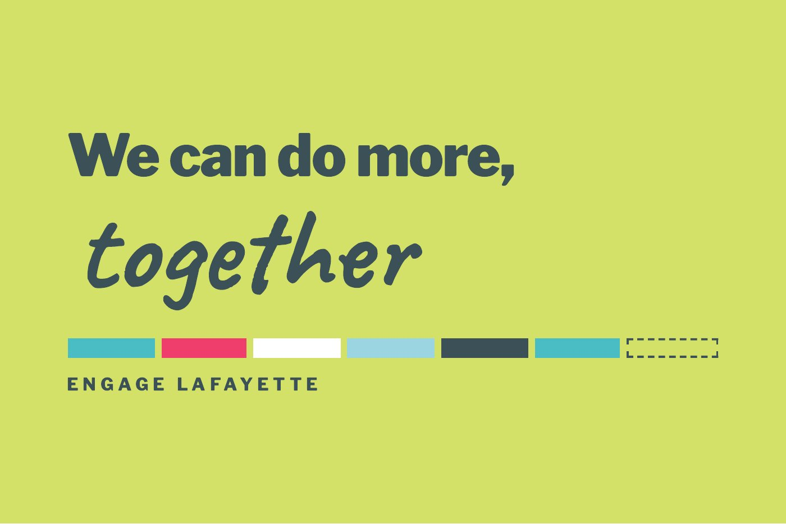
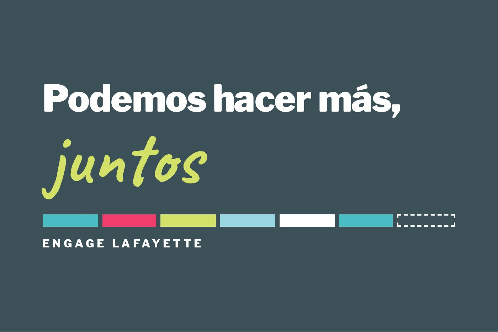
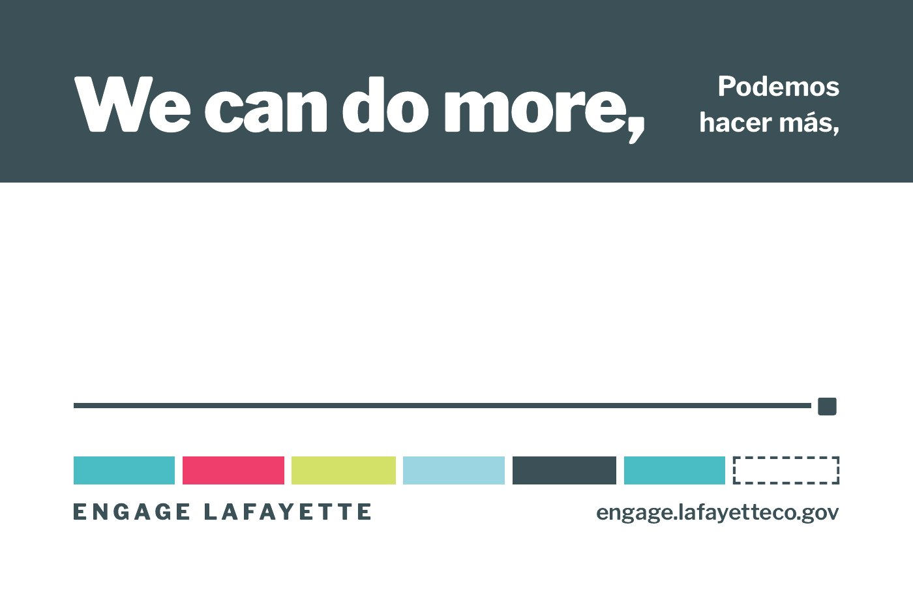
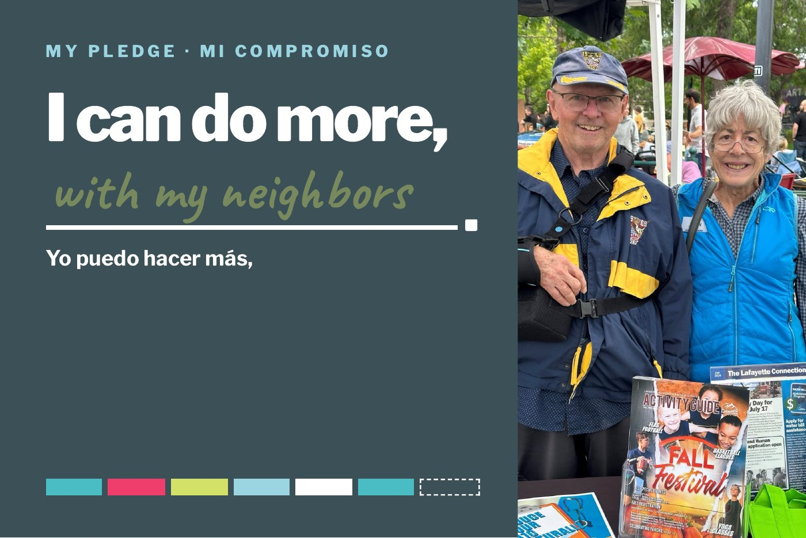
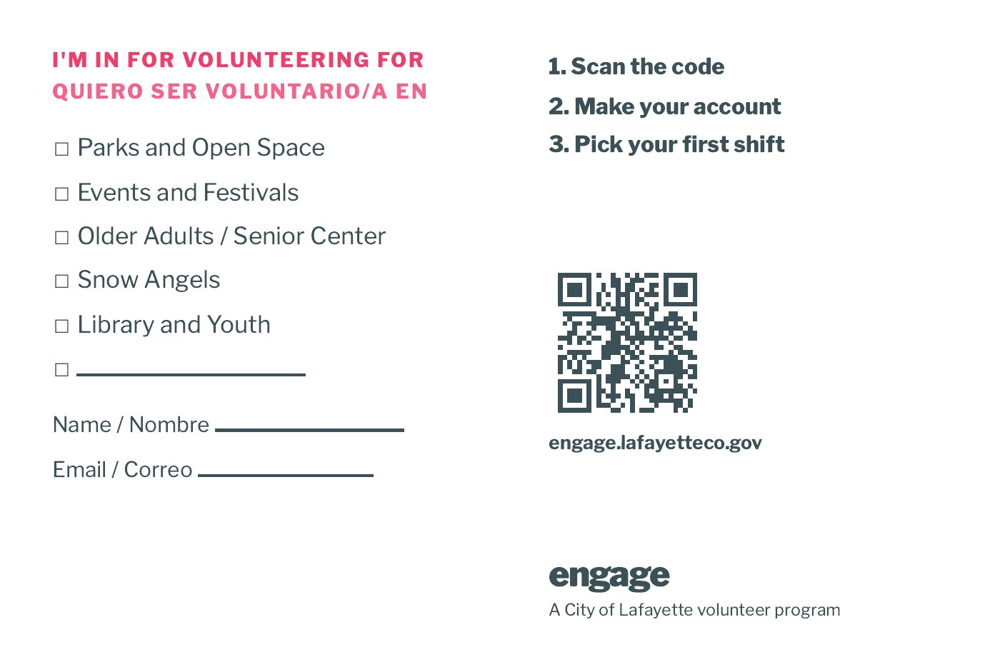
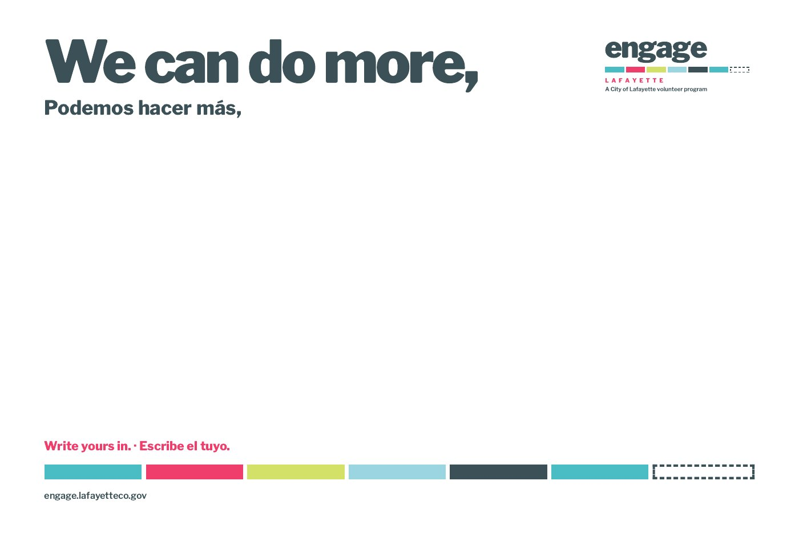
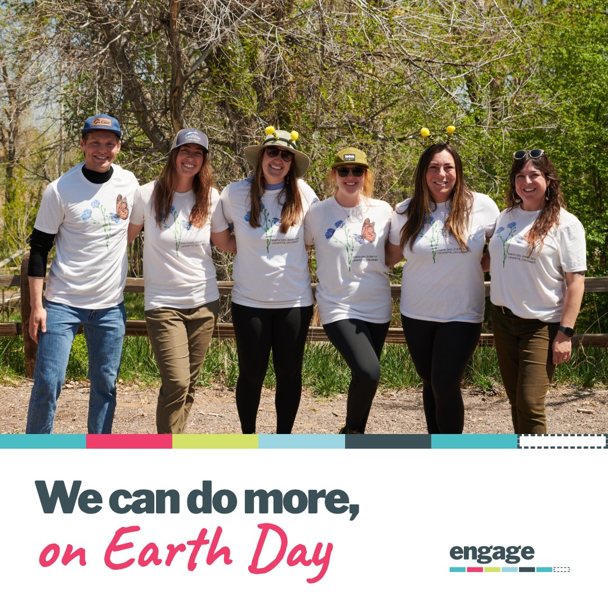
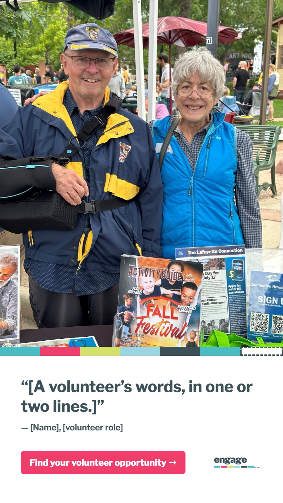
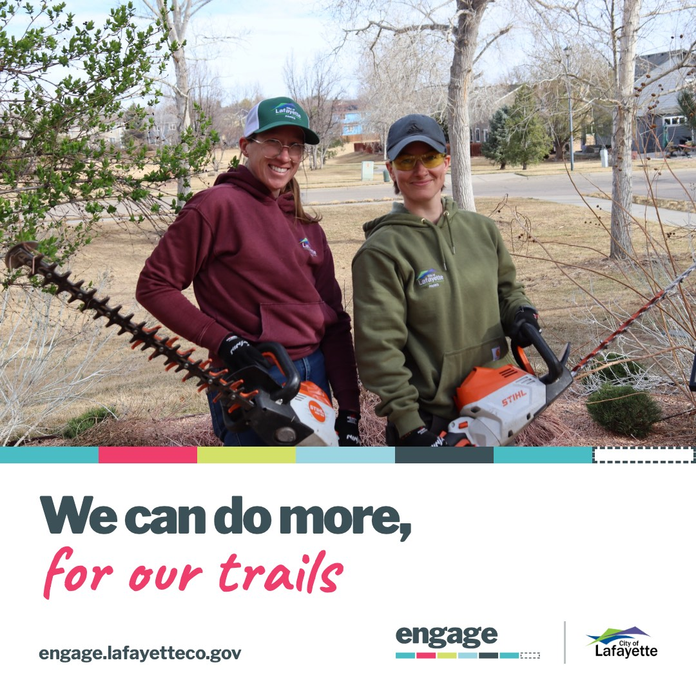
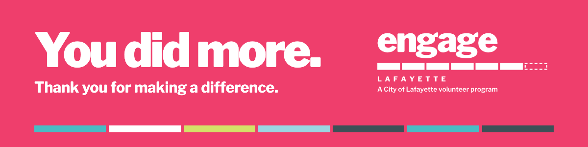